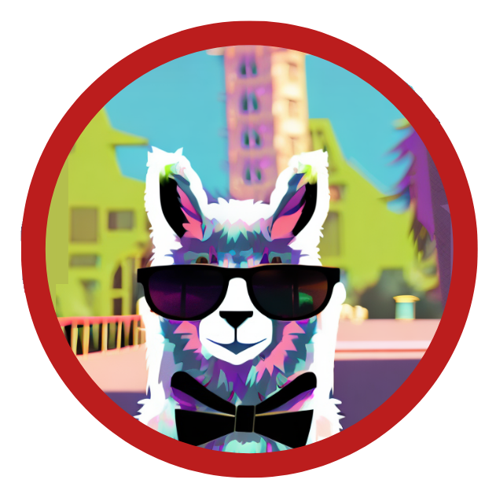
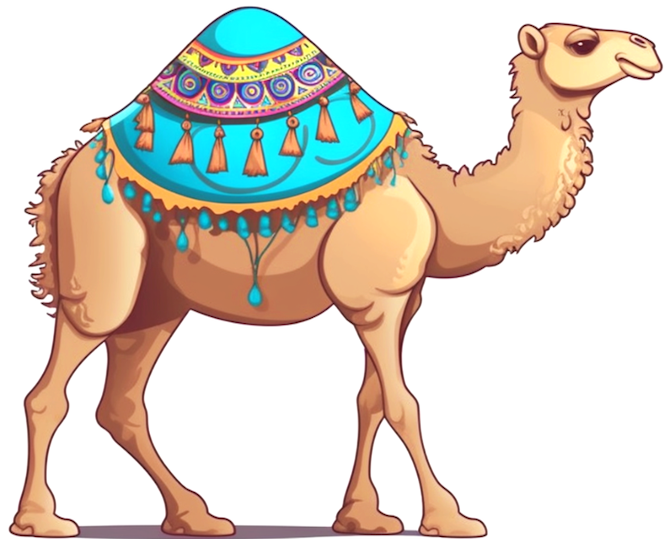
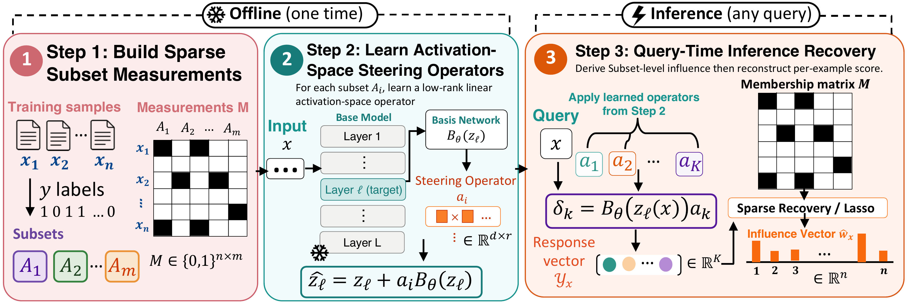

STRIDE
Training Data Attribution via Sparse Recovery from Subset Perturbations
 Code
Code
TL;DR: STRIDE traces a model’s predictions back to its training data in a scalable way by learning lightweight “activation steering operators” and uses them to recover the influence of individual training examples.
Gallery
Explore STRIDE’s attributions across multiple models and training datasets. For each test prompt we show the model’s continuation and the four training examples STRIDE identifies as the most and least influential.
Loading results…
LLM Pretraining Results and Scaling Model, Data
Linear Datamodeling Score (LDS) on nanochat pretrained on Nemotron-ClimbMix, evaluated on 500 held-out queries. STRIDE achieves the highest LDS at every model scale, at 1.38B parameters it is faster than the best baselines.
Beyond Pre-training: Influence on Instruction-Tuned Models
Linear Datamodeling Score for Qwen-2.5-0.5B fine-tuned on four instruction datasets. STRIDE is best on

Alpaca and
Tulu, on par on FLAN and SafeRLHF, and remains faster.Selecting High-Quality Training Data
Each method ranks 100,000 candidates per task, the top 1,000 are kept, and a fresh Qwen-2.5-0.5B is fine-tuned on the selection.
Auditing Memorization & Data Contamination
Fine-tune Qwen-2.5-0.5B on OpenWebText with replicated MATH problems injected at known rates. LoGRA alone recalls 62.1 % of leaked replicas in score-extreme buckets; adding STRIDE lifts that to 74.2 %. Unlike representation-similarity baselines, STRIDE contributes a model-dependent signal that separates memorization from lexical overlap.
Beyond LLMs: STRIDE on Vision Models
Evaluation on small supervised vision and tabular models where explicit retraining is feasible. STRIDE recovers training examples whose removal causally lowers the held-out probability.
Abstract
Training Data Attribution (TDA) seeks to trace a model's predictions back to its training data. The gold standard for TDA relies on causal interventions, observing how a model changes when data is added or removed, but repeated retraining is computationally challenging for Large Language Models (LLMs). Consequently, most approaches approximate this effect in the parameter space using gradients. However, tracking gradients across billions of parameters is not only prohibitively expensive but relies on local approximations. In this work, we propose a shift: rather than estimating parameter changes, we model the functional effect of training data in the activation space. We introduce STRIDE (Steering-based Training Data Influence Decomposition), a framework that formulates TDA as a sparse recovery problem in the spirit of compressive sensing. STRIDE learns lightweight “steering operators” that mimic the behavioral shift caused by training on data subsets. By measuring how these operators perturb test predictions, we recover individual training example influences via sparse linear decomposition. STRIDE achieves state-of-the-art for LLM pre-training attribution while being an order of magnitude ($13\times$) faster than previous art. We further validate its practical utility through downstream applications including data selection, data contamination, and qualitative analysis.
Method

Activation-Space Steering Operators
Standard attribution would require retraining the model on every candidate subset to measure its effect. STRIDE replaces retraining with a behavioral simulator: a single shared basis network reads the model's intermediate activations on a query and feeds them into a tiny per-subset steering vector, which shifts the output logits by approximately as much as a model retrained on that subset would. The basis network and steering vectors are trained jointly on the frozen base model under:
- Fidelity. On examples inside a subset, the steered model should predict like a model retrained on that subset.
- Stability. On unrelated examples, predictions should stay close to the frozen base model so each operator isolates the effect of its own subset rather than introducing global shifts.
- Linearity. Effects from different subsets should compose additively.
Show details Hide details
Let $g_\phi$ be a frozen reference model. For input $x$, let $h_x$activations at chosen layer denote the latent features and $o_x$base-model output logits the original output logits. A shared $B_\psi(h_x) \in \mathbb{R}^{1 \times r}$trainable low-rank basis produces a low-rank snapshot that we multiply by a subset-specific $a_k \in \mathbb{R}^{r \times C}$steering matrix for subset $k$ ($C$ output dimensions) to obtain the steered logits:
The basis parameters $\psi$ and the $K$ steering matrices $A = \{a_1,\dots,a_K\}$ are trained jointly under three complementary losses:
-
Fidelity. Drives the steered model to predict better on examples in
$A_k$the $k$-th training subset,
mimicking retraining on $A_k$:
\[ \mathcal{L}_{\text{fid}}(A_k) = - \frac{1}{|A_k|} \!\!\sum_{x \in A_k} \sum_{t=1}^{T} \omega_t \log\!\Big(\sigma\!\bigl(o_{x,t} + B_\psi(h_{x,t})\, a_k\bigr)_{y_{x,t}}\Big), \]with softmax $\sigma$, $t$token position in the sequence ranging over a sequence of length $T$sequence length, $y_{x,t}$ground-truth next token, and $\omega_t \in [0,1]$per-token loss weight.
-
Stability. Penalizes shifts on a random complement
$R_k \subset S \setminus A_k$held-out reference batch
via KL divergence, preventing degenerate “global” shortcuts:
\[ \mathcal{L}_{\text{stab}}(A_k, R_k) = \frac{1}{|R_k|} \!\!\sum_{x \in R_k} D_{\text{KL}}\!\bigl( \sigma(o_x) \,\|\, \sigma(o_x + B_\psi(h_x)\, a_k) \bigr). \]
-
Linearity (LDS). Encourages subset responses to compose additively, the property our recovery step relies on. We sketch the subset matrix as
$\tilde{M} = M R$Johnson–Lindenstrauss sketch
with
$R \in \mathbb{R}^{n \times q}$random projection matrix,
and penalize the ridge-regression residual of the implied additive datamodel:
\[ \mathcal{L}_{\text{LDS}}(y, \tilde{M}) = \big\|\tilde{M}\bigl(\tilde{M}^\top \tilde{M} + \gamma I\bigr)^{-1}\tilde{M}^\top y - y\big\|_2^2. \]
Once trained, the operators act as a zero-shot counterfactual simulator: for any new $x$, the $K$ perturbation measurements $y_{x,k} = \mathrm{Loss}(o_x) - \mathrm{Loss}(\tilde{o}_k(x))$loss change from operator $k$ are obtained in a single batched forward pass — no retraining, no gradients required.
Influence Recovery
Once trained, each steering vector answers one counterfactual question: “how would the model's loss on this query change if we had retrained on only this subset?” Stacking the answers from all subsets gives a short measurement vector for the query, paired with a binary subset-membership matrix recording which training examples contributed to which measurement.
STRIDE solves this with sparse linear regression (Lasso) on the subset-membership matrix, and constructs the subsets by randomly assigning each training example to several subsets so that the matrix forms a bipartite expander graph.
Show details Hide details
Under an additive-influence assumption, stacking the $K$number of subsets measurements yields the underdetermined linear system
with $y_x$subset perturbation measurements, $M$binary subset-membership matrix, and $w(x)$per-example influence vector. We resolve the ambiguity using the empirical observation that, for any single query, influence concentrates on a small fraction of training examples, and solve the Lasso problem
with $\lambda$$\ell_1$ sparsity coefficient. We build $M$ by assigning each training example to $d$subsets per training example randomly chosen subsets, so that $M$ is the adjacency matrix of a left-$d$-regular bipartite graph. With high probability this graph is a $(2k, \epsilon)$-expanderbipartite graph with strong neighborhood expansion, enabling provable sparse recovery:
Lemma. If $M$ is the adjacency matrix of a $(2k, \epsilon)$-expander with $\epsilon < 1/6$, then any $k$-sparseat most $k$ non-zero entries $w$ is uniquely recoverable via $\ell_1$ minimization from $K = \mathcal{O}\!\bigl(k \log(n/k)\bigr)$ subset measurements.
At our largest scale, $K=1000$ measurements suffice to recover influence over $n \approx 11.4\text{M}$ training examples, matching the predicted $k\log(n/k) \approx 617$ bound for $k \approx 50$ — an order-of-magnitude reduction over gradient-based attribution.